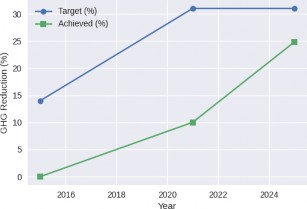
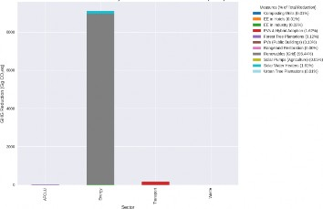

Jordan's Nationally Determined Contribution (NDC) 3.0
Vision for Ambition, Integration, and Inclusive Climate Action
September 2025
Historically, Jordan has been among the first countries in the Middle East to join global climate frameworks. The Kingdom signed the UNFCCC on 11 June 1992 and ratified it on 12 November 1993. It ratified the Kyoto Protocol in 2003, and later signed the Paris Agreement on 22 April 2016, ratifying it swiftly on 8 November 2016, once again demonstrating political will and readiness to be an early mover.
In national policy front, Jordan has also been a regional pioneer, being the first Arab country to adopt a comprehensive National Climate Change Policy in 2013, setting a clear long-term vision for mitigation, adaptation, and governance. This early policy framework has since served as a foundation for successive national climate strategies, and it inspired other countries in the region to develop similar policies.
Between 2020 and 2024, Jordan recorded significant achievements implementing its NDC 2.0, demonstrating both measurable progress and valuable lessons for the future. By 2024, Jordan had already realized 24.8 percent of its pledged 31 percent greenhouse-gas reduction target relative to 2010 levels as shown in Figure 1. This translates into the avoidance of roughly 9,269 Gg of CO₂-equivalent emissions, which represents a significant portion of the total commitment.


A key driver of this success has been the rapid expansion of renewable energy. According to the Ministry of Energy and Mineral Resources,the share of renewables in Jordan's electricity generation increased from approximately 12 percent in 2020 to 28.5 percent in 2024, a remarkable jump of 16.5 percentage points. In practical terms, this equates to about 5 GW of additional renewable capacity entering the system. Simultaneously, Jordan began to see a steady uptake in electric mobility, with electric-vehicle penetration rising from 1 percent to 21 percent of the national fleet, representing close to 120,000 vehicles deployed across both public and private fleets. The electrification of public fleets and tax incentives for private EV uptake contributed another 0.9 million tons of annual reductions.
Nature-based climate solutions also played a strong role. Afforestation and rangeland restoration efforts expanded by an additional 1000 dunums, 1 million Afforested trees planted , and 32500 trees planted in Urban areas, leading to sequestration of around 11,900 tons of CO₂-equivalent each year. While sector-specific projects, ranging from energy-efficient desalination plants to cement industry abatement measures, added annual savings. For the future, these results will be complemented by the launch of large-scale infrastructure depending on renewable energy to source electricity, and industrial initiatives with substantial mitigation potential. Flagship projects now moving into implementation include the Aqaba-Amman Water Desalination and Conveyance Project, the second phase of the Bus Rapid Transit (BRT-2) system, and industrial nitrous-oxide abatement in the cement and chemical sectors. Together, these are expected to deliver significant additional reductions between 2024 and 2030.
Jordan's approach to ambition is guided by a dual recognition: first, that climate change is a shared global responsibility requiring collective action;and second, that national responsibilities must reflect differentiated capacities, in line with the Paris Agreement's principle of common but differentiated responsibilities and respective capabilities (CBDR-RC). With historically low per- capita emissions but high vulnerability to climate shocks, Jordan has consistently demonstrated climate leadership by delivering more than its fair share relative to its historical contribution. At the same time, Jordan underscores that higher levels of ambition are only achievable with predictable international support, particularly in the form of climate finance, technology transfer, and capacity-building assistance. This framing allows Jordan to remain a credible and ambitious partner in the global effort, while ensuring that its pathways remain equitable, nationally appropriate, and aligned with sustainable development priorities. The ambition approach also embed an overall progression in the governing system and dimension covered by the NDC including special emphasis on the Information to Facilitate Clarity, Transparency, and Understanding (ICTU), focus on adaptation, highlighting additional sectors, and engaging effectively with stakeholders and actors.
The NDC 2.0 experience also produced critical insights. Certain technologies, such as concentrated solar power and select waste-to-energy initiatives, became economically obsolete due to global market shifts. Waste-sector mitigation measures underperformed expectations, and industrial decarbonization measures witnessed limited adoption. Furthermore, Jordan identified the need to strengthen data systems and ICTU-aligned monitoring frameworks, which are essential to ensure that future targets are realistic, measurable, and verifiable.
Building on these lessons, Jordan is designing NDC 3.0 with higher ambition and a forward- looking vision. Conditional targets may seek to surpass the 31 percent reduction threshold if supported by international partnerships, particularly through the integration of green hydrogen, advanced energy-storage solutions, high-performance building standards, and industrial efficiency measures. On the domestic front, unconditional targets may exceed 5 percent, driven by accelerated electric-mobility adoption, distributed solar generation, decentralized battery storage systems, and urban greening programs.
Most importantly, NDC 3.0 will mark the starting point of embedding a 2050 net-zero trajectory within national sectoral strategies (including the LTS). This will ensure that Jordan's contribution to the global climate effort remains not only ambitious, but also equitable, credible, and firmly grounded in the principles of the Paris Agreement.
Jordan's climate journey represents a profound and transformative progress in national climate ambition, underscoring the Kingdom's unwavering commitment to the Paris Agreement's ratchet mechanism and the principle of progressive enhancement of NDCs.
Building on this legacy, Jordan's first updated NDC with its 31 percent greenhouse-gas reduction target, already placed the Kingdom among the most ambitious countries in the Arab region, particularly given its resource constraints. Now, NDC 3.0 represents a paradigm shift, moving toward an integrated, economy-wide approach that combines mitigation, adaptation, and resilience-building into a coherent framework.
This enhanced commitment is fully aligned with the 2023 Global Stocktake, which underscored the urgency of accelerated action and recognized the centrality of the Global Goal on Adaptation (GGA) under Article 7 of the Paris Agreement. By integrating both adaptation and mitigation in a balanced way, Jordan once again positions itself as a regional model for holistic climate action.
Jordan has also led the way in transparency and governance. It was among the first Arab countries to submit an ICTU-compliant NDC update, ensuring clarity, transparency, and accountability. The Kingdom also institutionalized multi-stakeholder governance mechanisms through its National Climate Change Committee, guaranteeing that climate planning engages ministries directly, and civil society, academia, youth, and the private sector indirectly. These participatory structures remain rare in the region, and Jordan has set the tone for inclusive, whole-of-society climate governance.
On mitigation, Jordan pioneered renewable energy uptake in the Arab region. By 2024, renewables accounted for 28.5 percent of electricity generation, up from just 1 percent a decade earlier. Jordan was among the first countries in the region to begin phasing out fuel and electricity subsidies (starting in 2012), and among the pioneers in adopting regulatory frameworks and opening its grid to large-scale solar and wind projects, such as through Law No. 13 (Renewable Energy and Energy Efficiency Law), PPAs for major projects like the Tafila Wind Farm and Baynouna Solar Park, and regulatory reforms reinstated or advanced in 2024.
On adaptation, Jordan stands out for embedding climate resilience into water, agriculture, and land-use strategies earlier than most of its regional peers. Initiatives such as the Aqaba-Amman Water Desalination and Conveyance Project, and large-scale afforestation and rangeland restoration are recognized internationally as innovative adaptation-mitigation hybrids. In addition pioneering projects focusing on water and agriculture were implemented in allover Jordan, including measures that increase the resilience of communities such as water harvesting (both roof top and catchment areas), optimize reuse of treated waste water in agriculture, sustainable and smart agriculture, Innovative agricultural practices, and climate smart land use planning.
Furthermore, Jordan has been a pioneer in climate finance access. It was one of the first Arab countries to secure Green Climate Fund (GCF) readiness support and has since developed a pipeline of bankable projects, blending public and private finance. The City and Villages Development Bank was also the first local fund from the region to get GCF accreditation. Jordan also spearheaded the creation of a National Green Growth Framework (2017), the first of its kind in the region, aligning climate action with sustainable economic development and job creation. Afterwards producing seven sectoral National Green Growth Action Plans in 2019.
Jordan recognizes the intrinsic link between climate change, human security, and social stability. As one of the countries most affected by regional displacement, Jordan has integrated climate security into its national planning, ensuring that adaptation measures address the vulnerabilities of displaced communities and host populations alike. By embedding resilience-building into water, energy, and health systems, Jordan has emerged as a regional leader in climate security within the Arab States. This approach not only safeguards livelihoods but also strengthens social cohesion, demonstrating how inclusive adaptation can contribute to both national stability and regional peace.
A characteristic of Jordan's climate journey is its growing emphasis on climate justice. By incorporating gender considerations and youth participation into the NDC process, Jordan is taking important steps to ensure that climate action in the Arab region is not only about emissions, but also about equity, inclusion, and social resilience.
Looking forward, NDC 3.0 will further consolidate Jordan's pioneering role. It will explore green hydrogen and energy storage, advanced building standards, and industrial efficiency to exceed conditional targets. It will also integrate 2050 net-zero pathways into sectoral strategies, making Jordan one of the first countries in the region to embed a long-term net-zero vision into national planning.
By doing so, Jordan positions itself not only as a regional leader in innovative climate action but also as a hub for South-South cooperation, sharing experiences with other developing countries navigating similar constraints.
Jordan's NDC 3.0 will take a holistic, economy-wide approach linking actions across all major sectors to ensure each sector meaningfully contributes to the national climate transition. In the energy sector, the emphasis will move beyond the rapid renewable capacity expansion achieved under NDC 2.0 toward the more sophisticated task of system integration. While the stocktake confirms that renewables already contribute 28.5 percent of electricity generation, further expansion is constrained by grid limitations and intermittency challenges. To address this, NDC
3.0 will prioritize investments in utility-scale storage solutions, including both battery systems and pumped hydro facilities, enabling renewable penetration beyond 35 percent. In parallel, Jordan will accelerate the development of a green-hydrogen economy, which serves as both a strategic tool for domestic decarbonization and a potential export commodity, particularly within the framework of the EU-Jordan Green Deal Partnership.
In transport, building on the progress of electric-vehicle adoption and the first phase of the Bus Rapid Transit (BRT1) system, Jordan will develop an approach to consolidate these gains through the completion of BRT-2, the modernization of freight fleets, taking concrete steps toward transitioning its fleet and transport sectors from traditional fuels to natural gas, and the establishment of a nationwide fast-charging network. Given that transport emissions remain one of the fastest-growing sources of greenhouse gases, NDC 3.0 introduces integrated urban mobility planning and targeted incentives to encourage modal shifts toward more sustainable transport options.
Jordan's Economic Modernization Vision (2023-2033) provides the enabling framework for this climate transition, positioning the green economy as a central pillar of growth, investment, and job creation. The Vision identifies renewable energy, sustainable transport, water efficiency, and circular-economy industries as priority drivers of competitiveness. By embedding the NDC 3.0 into the EMV, Jordan ensures that climate action is not treated as a parallel agenda but as an engine of modernization, mobilizing private capital, enhancing energy security, and creating opportunities for youth and women in future-oriented sectors. This alignment gives NDC 3.0 stronger institutional backing and direct relevance to national socio-economic goals.
The Central Bank of Jordan will act as a cornerstone institution in enabling the financial system to deliver on NDC 3.0. In line with the National Green Finance Strategy, the CBJ will guide the banking sector in scaling up green credit lines, incentivizing lending to renewable energy, energy efficiency, sustainable transport, and climate resilient agriculture, and facilitating the issuance of green bonds and sukuk. By embedding climate- risk assessment into banking supervision and promoting environmental, social, and governance (ESG) standards, the CBJ will align capital flows with Jordan's low- carbon, climate- -resilient development pathway.
The water sector will explore both its mitigation and adaptation contributions in the flagship Aqaba-Amman Desalination and Conveyance Project, which employs energy efficient reverse-osmosis technology and 50% of its demand from renewable energy. Complementary measures such as low-emission pumping, leakage-reduction programmes, and climate-resilient operations will be scaled across utilities. These measures directly respond to the stocktake's finding that the water-energy nexus remains underrepresented in current mitigation portfolios.
In agriculture and forestry, NDC 3.0 will expand the adoption of climate-smart practices - including precision irrigation, drought-resilient crop varieties, and integrated pest management, thus reducing emissions while strengthening resilience. Afforestation initiatives will be linked with biodiversity corridors to align with the National Biodiversity Strategy and Action Plan, while large-scale rangeland restoration will continue to sequester carbon and provide co-benefits for rural livelihoods.
Waste management will undergo a major transition toward a circular-economy model. Building on the composting facilities established under NDC 2.0, efforts will now focus on overcoming low recycling rates and enhancing private-sector participation. Measures will include mandatory extended-producer-responsibility schemes, digital waste-tracking systems, and waste to energy projects.
In industry, decarbonization will be accelerated through results-based financing mechanisms and targeted technology transfer agreements. Recognizing that industrial mitigation measures lagged under in the period covered by previous NDCs, the NDC 3.0 will include sector-specific decarbonization roadmaps.
The health sector, the NDC 3.0 will integrate the newly launched national strategy for health sector adaptation to climate change, embedding climate resilience into service delivery. This includes gender-responsive planning, the expansion of early-warning systems for climate-related health risks, and infrastructure upgrades designed to withstand extreme heat and flooding events. Across urban systems, the rollout of green-infrastructure projects and nature based solutions will mitigate heat-island effects, improve livability, and deliver co-benefits for both mitigation and adaptation. Jordan's NDC 3.0 will integrate the climate change strategies and action plans of its major cities and municipalities, including Greater Amman Municipality, Greater Irbid Municipality, Greater Mafraq Municipality, Madaba, Karak, Tafila and the Aqaba Special Economic Zone Authority, as core components of the national implementation framework. Municipal measures will be aligned with NDC 3.0 targets, monitored through the MRV system, and supported by the National Climate Finance Strategy. This integration will ensure that local climate action directly contributes to national targets, unlocks access to green finance, and reflects the diverse needs and opportunities across Jordan's urban and regional contexts
Jordan's NDC 3.0 will be explicitly structured to meet the Information to Facilitate Clarity,
Transparency, and Understanding (ICTU) requirements of the Paris Agreement, in line with 2025 UNFCCC guidance. Targets will be quantified against business-as-usual baseline (will be defined in consultation with stakeholders), reflecting the 2025 Census, revised GDP projections, and the latest energy-sector emission factors. Sectoral GHG trajectories will be presented in both absolute and percentage terms, with coverage extending to all IPCC sectors and gases within Jordan's national boundaries.
Timeframes will be clearly defined, with 2035 as the primary target year. Assumptions and methodologies, including the choice of global warming potentials and the treatment of land-use change, will be transparently documented. The planning process will be detailed, showing integration with the Energy Strategy 2035, the National Adaptation Plan, and the National Biodiversity Strategy and Action Plan, and considering NDC-SDG alignment.
A strengthened finance t-racking framework will form a core part of ICTU alignment. As set out in the National Green Finance Strategy, the Central Bank of Jordan will integrate climate finance reporting into the national financial- reporting system, ensuring that flows to mitigation and adaptation are transparently monitored- in line with the Enhanced Transparency Framework of the Paris Agreement. The CBJ will operationalize the national green finance taxonomy, issue sector- wide green- finance guidelines, and require climate- -risk disclosure from regulated entities. It will also support the structuring and issuance of sovereign and corporate green bonds and sukuk, and work with commercial banks and microfinance institutions to expand access to green credit lines. These measures will strengthen Jordan's ability to mobilize domestic and international capital at scale, while safeguarding financial stability and ensuring that finance flows are consistent with a low emission, climate- -resilient development pathway.
Fairness and ambition under the principle of common but differentiated responsibilities and respective capabilities (CBDR-RC), will be framed in the context of Jordan's low per-capita emissions, high climate vulnerability, and a track record of over-achieving conditional targets despite constrained fiscal space. Implementation arrangements will assign clear roles to the Ministry of Environment, sectoral ministries, and the local actors including NGOs and private sector. The MRV framework will be strengthened by full operationalization of the MRV system and expanding it, to include more sectors and financing tracking elements, and the system's data and reports will be directly linked to the UNFCCC's ICTU portal to enhance public transparency.
The Global Stocktake has made clear that lasting climate ambition depends on broad-based ownership and inclusive governance. Building on this lesson, Jordan's NDC 3.0 will embed stakeholder engagement as a permanent feature of both the formulation and implementation process.
At the national level, the National Climate Change Committee (NCCC), chaired by the Ministry of Environment and composed of 16 secretary-generals from key line ministries (water, energy, agriculture, planning, industry, etc.), will provide strategic guidance and oversight. To deepen political buy-in, regular parliamentary briefings will ensure alignment across parties and sustained endorsement. Jordan's Climate Change Committee is distinguished by its multi-level and cross-ministerial structure. Unlike many countries in the region, Jordan ensures that climate policy is coordinated not only by the Ministry of Environment but also in close partnership with the Ministry of Finance and the Ministry of Planning and International Cooperation. This institutional design embeds climate action within fiscal policy, development planning, and environmental governance, ensuring coherence, resource mobilization, and long-term sustainability.
At the sectoral level, working groups coordinated by MoEnv will gather inputs from ministries and technical staff, assess achievements and gaps of the current NDC, and propose updated sectoral contributions. These groups will be supported by targeted training and technical assistance to strengthen their ability to design mitigation, adaptation, and co-benefit measures.
At the sub-national level, structured governorate consultations will bring in municipalities, local NGOs, and community leaders. These will make sure that regional development priorities and vulnerabilities are fully reflected in the NDC update.
Youth engagement will be scaled up through youth forums under the Ministry of Youth. With 63% of Jordan's population under 30, empowering young people is vital. Activities such as the Local Conference of Youth (LCOY), digital advocacy platforms, and green job training in renewable energy, agriculture, and sustainable transport will nurture a new generation of climate leaders
Gender inclusion will be mainstreamed throughout the process. Building on Jordan's Gender Action Plan and National Strategy for Women, women-led CSOs, female researchers, and gender experts will be invited into consultations and NCCC technical groups.
Practical measures, such as scheduling consultations at times accessible for women, providing local-language facilitators, and collecting sex-disaggregated data, will ensure that women's perspectives shape both policies and projects
The private sector will engage through sector-specific roundtables in industries such as energy, transport, cement, ICT, tourism, and finance. A structured public-private dialogue mechanism will also be established to align policy incentives with investment needs, backed by a Green Finance Task Force of banks and investors to design climate finance instruments
Civil society participation will extend to refugee communities, farmers' cooperatives, informal- sector workers, and persons with disabilities (PWDs). Refugees, for example, are already active in initiatives such as the Refugees for Climate Action network and the solar plant in Zaatari camp, which demonstrates how displaced communities can contribute to resilience.
To support transparency and continuous interaction, a digital engagement platform, linked to the ICTU system, will allow citizens to track progress, provide feedback, and contribute to consultations in real time.
Together, these measures ensure that Jordan's NDC 3.0 is not only technically robust and aligned with the Global Stocktake, but also socially anchored, gender-responsive, regionally inclusive, and politically durable, a true whole-of-society endeavor.
Jordan's NDC 3.0 will respond directly to the imperatives highlighted by the Global Stocktake: higher ambition, enhanced adaptation, scaled finance and technology transfer, and greater equity and inclusion.
Mitigation ambition will be strengthened through both unconditional and conditional targets, supported by quantified sectoral pathways.
Adaptation will be deepened with a focus on water security, agricultural resilience, and urban heat mitigation, underpinned by nature-based solutions.
A National Climate Finance Strategy will be developed to mobilize domestic and international resources, with targeted engagement of the Green Climate Fund, the Adaptation Fund, and blended-finance instruments.
Equity and inclusion will be advanced through gender-responsive and youth-driven climate action, ensuring that vulnerable groups are active participants in the transition
Assumptions are critical when developing growth trajectory and Business-as-Usual scenario and decide on sectoral targets and measures to develop a robust and comprehensive NDC
3.0. Key assumptions that will be used are listed in the table 1 below:
|
Assumption |
Rationale |
Implication for NDC 3.0 |
|
Economic growth at ~2-3% annually |
Based on national Economic Modernization Vision and IMF forecasts |
Determines baseline emissions growth and capacity for mitigation investments |
|
Population growth continues, incl. refugee inflows |
Jordan's high youth share (63% under 30) and ongoing regional instability |
Higher demand for energy, water, jobs; requires inclusive and scalable climate measures |
|
High energy import dependence persists (~93%) |
Jordan remains energy-insecure but expanding renewables |
Strong justification for accelerated RE and EE as mitigation and resilience measures |
|
Continuity of Climate Change Bylaw No. 79 (2019) and NCCC and technical working groups role |
Provides institutional mandate for coordination |
Ensures multi-sectoral governance and policy consistency |
|
Alignment with LTS, Climate Change Policy (2022-2050), and Economic Modernization Vision |
National strategies already endorsed |
NDC 3.0 must integrate and not duplicate efforts |
|
Conditional vs. unconditional target structure retained |
Builds on NDC 2.0 design and GCF financing logic |
Clarity on what Jordan can do with/without international support |
|
Climate finance partially accessible (GCF, MDBs, blended finance) |
Readiness proposal supports access |
Ambition level conditional on external support |
|
Gradual technology transfer (RE, EVs, MRV digital tools, efficiency) |
Technology costs declining globally; donor support increasing |
Enables higher mitigation ambition and improved MRV accuracy |
|
Operational MRV/MRL systems established |
Readiness program invests in MRV systems |
Enables transparent tracking of targets and finance flows |
|
Whole-of-society stakeholder engagement institutionalized |
Inclusivity for youth, women, refugees, PWDs, CSOs, and private sector |
Increases social acceptance and political durability |
|
Gender mainstreaming in all measures |
Jordan's Gender Action Plan & National Strategy for Women |
Promotes equity, ensures female participation in climate leadership |
|
Governorate consultations capture sub-national priorities |
Regional disparities in vulnerabilities and opportunities |
More tailored adaptation and mitigation measures |
|
Climate scenarios: +1.2-2.2°C warming by 2050, severe water stress (<100 m³/person/year) |
Based on national climate risk assessments |
Strong focus on water adaptation, agriculture resilience, and disaster risk management |
|
More frequent droughts, floods, and heat waves |
IPCC and national projections |
Reinforces need for adaptation in infrastructure, health, and food security |
|
Capacity of MoEnv, MoPIC, and MoF strengthened |
Readiness program provides training and tools |
Improves cross-ministerial coordination and policy coherence |
|
Private sector increasingly engaged via green finance frameworks |
Jordan's financial sector developing PPPs, green bonds, guarantees |
Mobilizes additional climate investments and innovation |
|
Stable political environment with cross- party consensus |
Parliamentary briefings and NCCC coordination planned |
Provides continuity and durability of NDC 3.0 implementation |